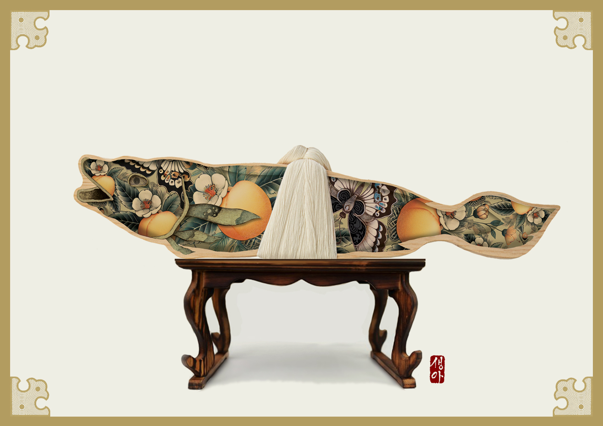
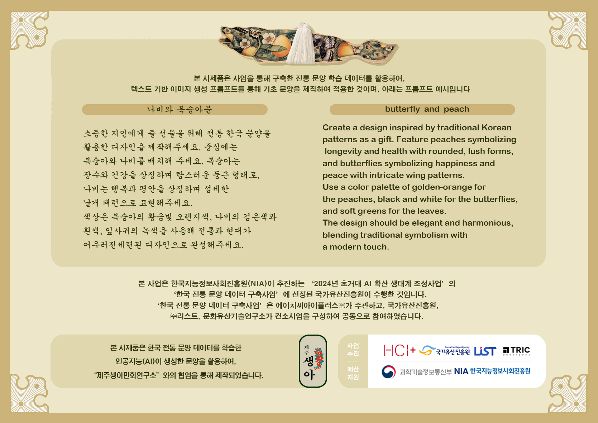

Butterfly & Peach
복숭아와 나비
복숭아의 장수·건강과 나비의 행복·평안을 상징합니다. 황금 오렌지, 블랙&화이트, 소프트 그린의 조화로 고급스럽고 조화로운 미감을 구현했습니다.
본 시제품은 ‘한국 전통 문양 데이터 구축사업’을 통해 인공지능이 학습한 전통 문양 데이터를 활용하여 제작한 모델로 생성한 상품을 안내하는 페이지입니다.
국가유산진흥원, (주)HCI+, 문화유산기술연구소, LIST, TRIC 협력
세 가지 상징 — 복숭아·나비, 봉황·덩굴, 석류·나비.
복숭아의 장수·건강과 나비의 행복·평안을 상징합니다. 황금 오렌지, 블랙&화이트, 소프트 그린의 조화로 고급스럽고 조화로운 미감을 구현했습니다.
봉황은 번영과 평화를, 덩굴은 생명력과 성장을 상징합니다. 깊은 적색과 금색, 그린 톤을 활용해 정제된 품격과 생동감을 함께 담았습니다.
석류의 풍요와 번영, 나비의 행복과 장수의 상징을 결합했습니다. 적색·파스텔 블루·골드 팔레트로 전통적 아름다움과 현대적 세련미를 함께 표현했습니다.
전통문양 데이터셋을 기반으로 텍스트 프롬프트에서 이미지를 생성하는 흐름을 설계하고, 디자인 후편집을 통해 전통 상징과 현대적 조형을 조화시켰습니다.
butterfly and peach
Create a design inspired by traditional Korean patterns as a gift.
Feature peaches symbolizing longevity and health with rounded, lush forms,
and butterflies symbolizing happiness and peace with intricate wing patterns.
Use a color palette of golden-orange for the peaches, black and white for the butterflies,
and soft greens for the leaves.
The design should be elegant and harmonious, blending traditional symbolism with a modern touch.
공공·민간 협력으로 전통의 가치를 디지털로 확장합니다.
이메일: t@kh.or.kr
복숭아는 장수와 건강, 나비는 행복과 평안을 상징합니다. 둥근 형태와 섬세한 날개 패턴을 통해 부드러운 조화와 희망을 표현했으며, 황금 오렌지 계열의 복숭아, 블랙&화이트의 나비, 연둣빛 잎사귀로 전통과 현대의 균형을 담았습니다.
Butterflies symbolize happiness and peace; peaches signify longevity and health. A palette of golden‑orange, black & white, and soft greens blends traditional symbolism with a modern touch.
봉황의 우아한 날개와 흐르는 꼬리 깃은 조화와 번영을, 꽃과 잎이 이어지는 덩굴은 생명력과 성장을 뜻합니다. 깊은 적색과 금색, 그린의 대비로 정제된 품격을 부여했습니다.
The phoenix conveys harmony and prosperity, while vines represent vitality and growth. A deep red–gold–green palette creates a refined, sophisticated look.
석류 알갱이의 세밀한 디테일과 둥근 형태, 나비의 우아한 곡선과 날개 패턴을 조합해 풍요와 행복, 장수를 기원하는 메시지를 전합니다. 붉은색·파스텔 블루·골드의 조화로 현대적 세련미를 더했습니다.
Pomegranates symbolize abundance and prosperity; butterflies signal happiness and longevity. Red with pastel blue and gold brings modern sophistication to traditional beauty.